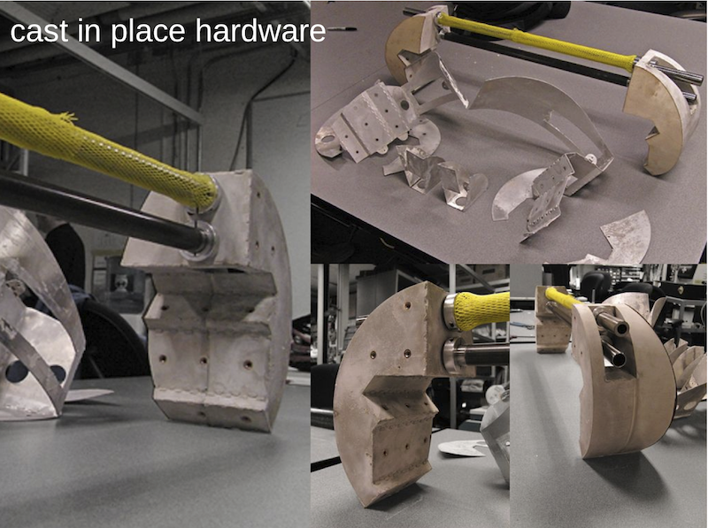
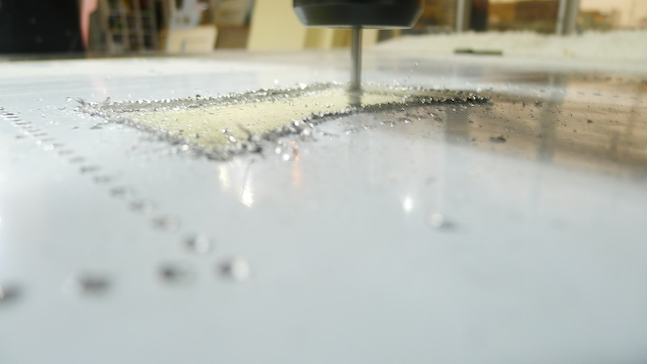
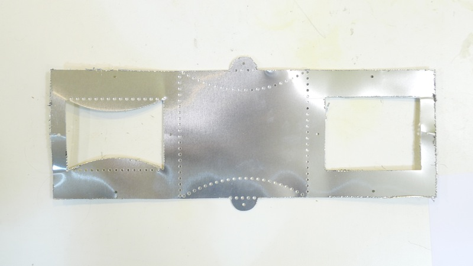

On site molding using aluminium folding. Based on the work of Kenny Cheung (CBA, MIT).
This project was done as a test on the folded molding know-how, an improved version with the final design will be done soon
Reference WORK
by Kenny Cheung (CBA, MIT) Process Details
 